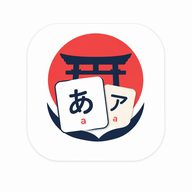

Política de privacidade — Nihongo Study
Última atualização: 5 de novembro de 2026
- O Nihongo Study não tem servidor, não pede cadastro e não coleta nenhum dado seu.
- O seu progresso de estudo fica guardado no próprio aparelho, no navegador.
- Se você ligar a sincronização com o Google Drive (opcional), uma cópia desse progresso vai para uma pasta oculta do app no seu Google Drive — e para nenhum outro lugar.
- Nada é vendido, compartilhado ou usado para publicidade.
Quem somos
O Nihongo Study (nihongostudy.app) é um app gratuito e de código aberto para estudar japonês, feito por Rodrigo Caneppele como projeto pessoal, sem fins comerciais. Contato: nihongostudyapp@gmail.com.
Que dados o app guarda
Apenas o que você faz no app: cards de vocabulário e o histórico de revisões, progresso em kana, kanji e leituras, atividade por dia e preferências (tema, meta diária etc.). Esses dados ficam no armazenamento do navegador do seu aparelho (IndexedDB) e não são enviados para nenhum servidor do app — ele não tem servidor.
Quando uma atualização do app muda a forma como os dados são guardados, ele salva antes uma cópia de segurança deles, também só no seu aparelho. Essa cópia é apagada sozinha depois de 30 dias e não vai para o Google Drive nem para o arquivo de backup.
O app não usa contas próprias, cookies de rastreamento, ferramentas de análise (analytics) nem anúncios.
Sincronização com o Google Drive (opcional)
A sincronização vem desligada. Se você escolher ligá-la (Configurações › Dados › Conectar com o Google):
- Você entra com a sua conta Google na página do próprio Google e autoriza o acesso. O app pede só a permissão
drive.appdata, que dá acesso a uma pasta oculta e exclusiva do app no seu Drive. O app não vê, não lê e não altera nenhum outro arquivo seu. - Nessa pasta o app grava um único arquivo (
nihongo-study-sync.json.gz) com o seu progresso de estudo, para manter seus aparelhos iguais. - O app lê o endereço de e-mail da conta conectada apenas para mostrar, na tela, com qual conta você está sincronizando. Ele fica guardado só no seu aparelho.
- O acesso concedido pelo Google (um token válido por cerca de 1 hora) fica guardado só no seu aparelho.
- Os dados vão direto do seu aparelho para o seu Google Drive, sem passar por nenhum servidor intermediário. O desenvolvedor do app não tem acesso ao seu Drive nem aos seus dados.
O uso e a transferência de informações recebidas das APIs do Google seguem a Política de Dados do Usuário dos Serviços de API do Google, incluindo os requisitos de Uso Limitado. Esses dados são usados exclusivamente para sincronizar o seu progresso entre os seus aparelhos — nunca para publicidade, nunca vendidos ou repassados a terceiros, e nunca lidos por pessoas.
Como apagar seus dados
- Neste aparelho: Configurações › Dados › Zona de risco › Apagar todos os dados, o que inclui a cópia de segurança (ou limpar os dados do site no navegador, ou desinstalar o app).
- No Google Drive: Configurações › Dados › Sincronizar com o Google Drive › Apagar a cópia no Drive. Isso remove o arquivo do app do seu Drive e desconecta o aparelho.
- Remover a permissão do app: em Desconectar, no próprio app, ou a qualquer momento em myaccount.google.com/permissions.
Outros serviços envolvidos
- Hospedagem: o app é servido pela Cloudflare. Como qualquer site, ela pode registrar dados técnicos de acesso (como o endereço IP), conforme a política de privacidade da Cloudflare. O endereço antigo (rcaneppele.github.io/nihongo-study), mantido para quem ainda não levou os dados, é servido pelo GitHub Pages, conforme a declaração de privacidade do GitHub.
- Áudio em japonês: a leitura em voz alta usa as vozes do seu sistema/navegador. Dependendo do navegador e da voz escolhida, o texto lido pode ser processado online pelo fornecedor da voz (por exemplo, Google, Apple ou Microsoft), conforme a política dele. O app não envia nada por conta própria.
Crianças
O app não coleta dados de ninguém, de nenhuma idade.
Mudanças nesta política
Se esta política mudar, a nova versão será publicada nesta mesma página, com a data de atualização no topo.
Privacy policy (English summary)
Nihongo Study is a free, open-source Japanese study app with no backend server, no accounts, no analytics and no ads. Your study progress is stored only in your browser on your device (IndexedDB).
Optional Google Drive sync (off by default) uses the drive.appdata scope only: the app can access
just its own hidden app folder in your Google Drive, where it stores a single file with your study progress. It reads
your account e-mail address only to show which account is connected. The access token and e-mail stay on your device.
Data goes directly from your device to your own Google Drive; the developer has no access to it.
Nihongo Study's use and transfer of information received from Google APIs adheres to the Google API Services User Data Policy, including the Limited Use requirements. This data is used solely to sync your progress across your own devices; it is never used for advertising, sold, shared with third parties, or read by humans.
To delete your data: in the app, use Configurações › Dados › "Apagar todos os dados" (device) and "Apagar a cópia no Drive" (Google Drive); you can revoke access at any time at myaccount.google.com/permissions. Contact: nihongostudyapp@gmail.com.